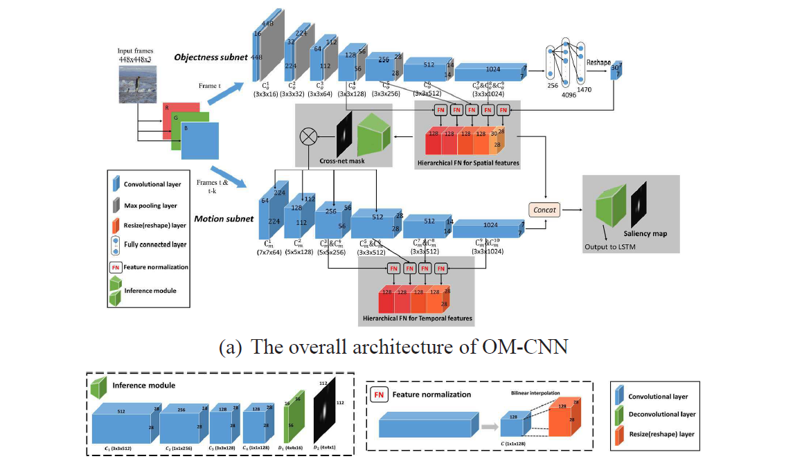

Minglang Qiao
 |
Minglang, Qiao |
My research interests include computer vision and perceptual video coding. Here is my full Curriculum Vitae (CV).
Biography
I am a 3rd-year Doctoral student at the Multimedia Computing Towards Communications (MC2) Lab, Beihang University, China, under the supervision of Prof. Mai Xu. My research interests include human attention prediction, salient object detection and their applications on perceptual video coding. I obtained the B.Sc. degree in 2018 at Beihang University, P.R. China.
Selected Publications
 |
Learning to Predict Salient Faces: A Novel Visual-Audio Saliency Model |
 |
Viewport-Dependent Saliency Prediction in 360° Video |
 |
Predicting Head Movement in Panoramic Video: A Deep Reinforcement Learning Approach |
|  |
Deepvs: A Deep Learning Based Video Saliency Prediction Approach |
|
Joint Learning of Visual-Audio Saliency Prediction and Sound Source Localization on Multi-face Videos |
Projects
See more details of my projects.- Researches on Perceptual Video Coding
Research on QoE-Oriented Perceptual Video Coding Technology with Alibaba Cloud ( Alibaba Innovative Research Programme , work with Yunjin Chen ), 2021 - Present
QoE-Oriented Transcoding for E-Commerce Images on Taobao of Alibaba ( Alibaba Innovative Research Programme , 2020 - 2021
Perceptual Video Coding of Live Video with Momo Corporation (listed company), 2019 - 2020
- Researches on Human Attention Prediction
Deepvs: A Deep Learning Based Video Saliency Prediction Approach, 2017-2018, [Paper]
Predicting Head Movement in Panoramic Video: A Deep Reinforcement Learning Approach, 2017 - 2018 [Paper]
- Researches on Multi-Task Learning
Viewport-Dependent Saliency Prediction in 360° Video, 2018-2019 [Paper]
Joint Learning of Visual-Audio Saliency Prediction and Sound Source Localization on Multi-face Videos, 2020 - 2021 [Paper]
- Researches on Multi-Modal Learing
Learning to Predict Salient Faces: A Novel Visual-Audio Saliency Model, 2019-2020 [Paper]
Awards
- National Encouragement Scholarship, P.R. China. [Certificate]
- National 1st Prize, National Undergraduate Electronics Design Contest. (Top 2.4%, among 14, 400+) [Certificate]
- Outstanding Science and Technology Scholarship of Beihang University [Certificate]
- Admission Scholarship of Beihang University for First-year Postgraduate Student [Certificate]
- First Class of Postgraduate Scholarship in Beihang University
- First Prize on the 26th "Fengru Cup" Innovation Contest (The top innovation competition in Beihang University) [Certificate]
- Second Prize on the 27th "Fengru Cup" Innovation Contest [Certificate]
- Second Prize on 8th national “Blue Bridge Cup” Programming Contest [Certificate]
{kind=link}
{kind=link}
{kind=link}
{kind=link}
{kind=link}
{kind=link}
{kind=link}